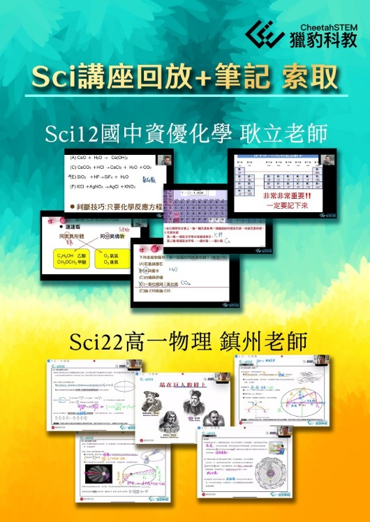

『Sci12國中資優化學 & Sci22高一物理 講座回放＋筆記 索取』
#按讚留言+1索取
#同步開放Sci正課一堂試上
國中理化知識框架，到了高中還適用嗎？表面看似平順的過渡，背後卻暗藏著讓人措手不及的學習落差。
在Sci22高一物理講座中，鎮州老師揭示了國中的解題方法，在高中遇到抽象邏輯與定量分析時，挑戰重重。講座從克普勒定律的演變出發，結合數學工具的運用，為孩子搭建通往高中物理理解的橋樑。
而在Sci12國中資優化學講座中，耿立老師帶領孩子走出「死記硬背」的困局，讓他們明白化學不只是反應式的堆疊，而是洞察反應背後的規律，為銜接高中化學思維鋪平道路。
兩場講座，孩子收穫的是國中到高中無縫銜接的核心思維。
應家長熱烈要求，我們提供講座回放＋課後筆記，讓需要複習或深入學習的孩子，不錯過這份珍貴的啟發。
歡迎索取，為孩子的科學學習，在國中厚積實力，注入關鍵助力！
====
●「2025 Sci12國中資優化學, Sci22高一物理 報名開跑！」
https://www.facebook.com/share/p/1AzwHjvaRF/
===
♦Sci12:國中資優化學: 耿立老師
台大化學碩士 20年升大學教學經驗
♦Sci22:高一物理:陳鎮州老師
台灣師大物理系
台大物理碩士
台灣師大物理博士班
公校/補教完整多年教學經驗
詳見以下臉書連結：
https://www.facebook.com/share/p/1Dg2RyLTSm/
